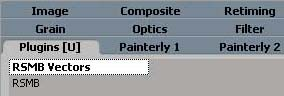
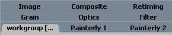

Important notice
RSMB for XSI should be automatically installed with the RSMB installer. The installer retrieves the following:
- Application\Plugins\RSMBPlugin.dll
- Doc\RSMB\RMSBXSIdoc.htm
- Application\fx\ufos\RSMBVectors.dll
- Application\fx\ufos\RSMB.dll
- Addons\RSMB.xsiaddon
The RSMB xsiaddon can be used as alternative to the Factory Install. Once you have extracted the files somewhere simply drag and drop the xsiaddon on an xsi viewport and restart XSI. For example if one has both XSI 4.0 and XSI 4.2, once the plugin has been properly installed into one version, one can just grab the xsiaddon to install it in the other version. If you want to install over an older version of the plugin then you will have to do File|Addon|Uninstall -- select RSMB and proceed with drag and drop install. If for any reason you prefer to install it yourself , here's the procedure.
installing RSMB as user plugins :
Let %XSI_USERROOT% the XSI user root directory (usually C:\Softimage\%USER%).
copy RSMB.dll and RSMBVectors.dll in %XSI_USERROOT%\XSI_x.x\Application\fx\ufos (you will have to create the folders if it's the first ufo that you install)
copy RSMBPlugin.dll in %XSI_USERROOT%\XSI_x.x\Application\Plugins
Restart XSI.
the RSMB ufos will appear under the Plugins[U] Tab in the FX Operator Selector Window

installing RSMB as workgroup plugins :
Let %XSI_WKG% the XSI workgroup root directory.
copy RSMB.dll and RSMBVectors.dll in %XSI_WKG%\Application\fx\ufos
copy RSMBPlugin.dll in %XSI_WKG%\Application\Plugins
Restart XSI.
the RSMB ufos will appear under the WorkGroup[... Tab in the FX Operator Selector Window
